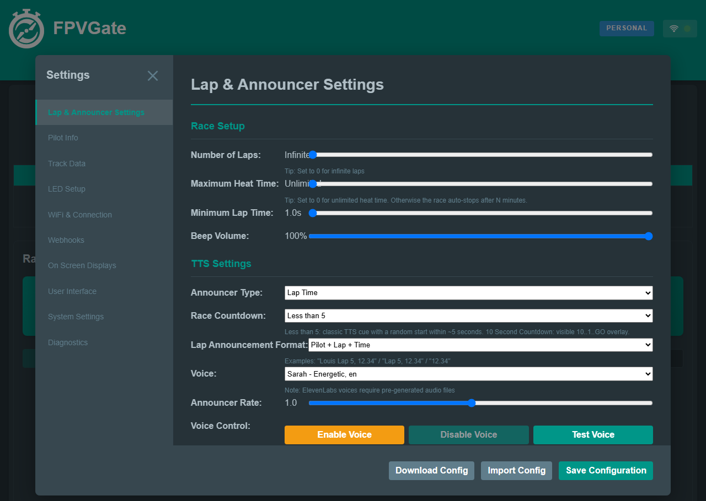
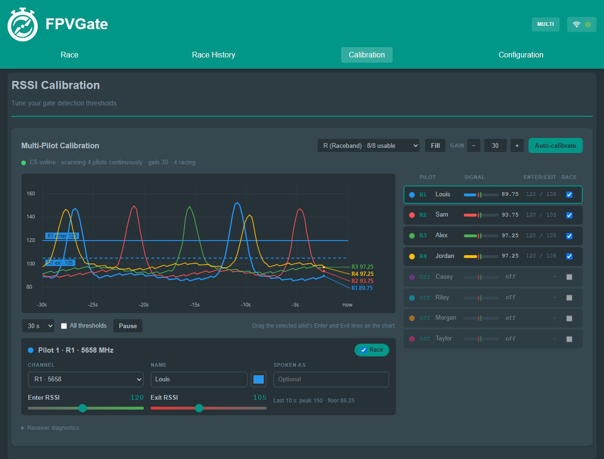
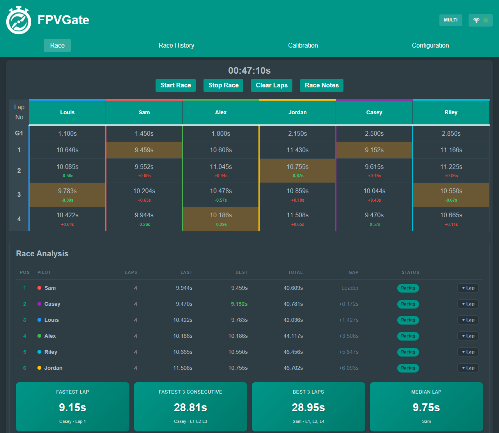
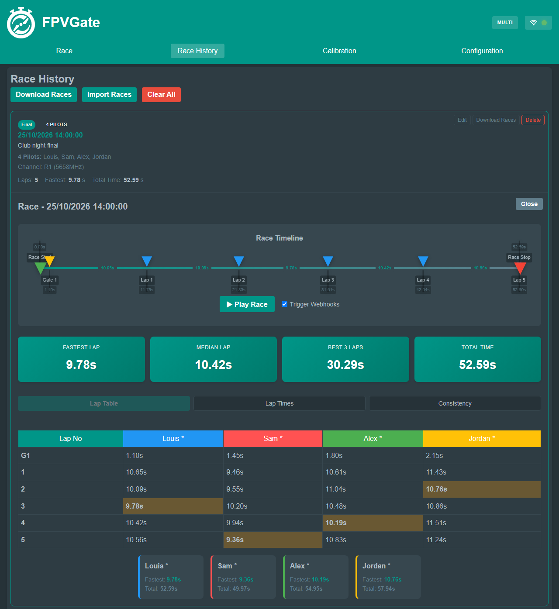

FPVGate C5MK AIO Quick Start
Connect your gate, calibrate each pilot, and run your first heat.
Unboxing
The C5MK AIO is an assembled lap timer. Its S3 runs the timer and serves the web interface. The C5 receives the video signals used to time up to eight pilots.
Before you power it on
- Find the S3 USB-C port. Use this port to power the gate and connect to its browser interface over USB.
- Have a USB-C data cable ready if you plan to connect to a computer. A charge-only cable can power the gate for Wi-Fi setup.
- Check that the prepared microSD card is seated before powering on if you want to record RSSI traces for Visual Marshal.
- Have a quad with a working video transmitter and a way to check its exact channel.
Which USB port?
Use the S3 port throughout this guide. The separate C5 port is for receiver firmware and direct USB to RotorHazard.
Initial setup
Connect over Wi-Fi
- Connect the S3 port to USB-C power and allow a few seconds for startup.
- On your phone, tablet, or computer, open Wi-Fi settings and pick the gate's network. The last four characters distinguish your gate from others nearby.
- Enter the factory password below. If your device warns that the network has no internet, choose to stay connected.
Open the gate in your browser. Include http:// when typing the address.
If the hostname doesn't resolve, use the IP address. On macOS, use this Wi-Fi connection.
Connect over USB
- Connect the S3 port directly to a Windows or Linux computer with a USB-C data cable.
- Wait for the USB network adapter to appear. Your computer can stay on its usual Wi-Fi network.
- Open the address below. The same cable powers the gate and carries the browser connection.
Connect one gate at a time over USB networking because they share this address. If the adapter doesn't appear, check the S3 port, reconnect the cable, or try a known data cable.
Check the receiver and your race settings
- Open Calibration. The status should show the C5 online and scanning. If the browser opens but the C5 stays offline, restart the gate and check again before trying to race.
- Open Configuration to set the race countdown, Minimum Lap Time, and announcements. Set the minimum below your fastest realistic lap but long enough to reject repeat detections from a single crossing. Try 3 to 5 seconds if that suits the track.
- Choose lap speech or a crossing beep and check media volume on the device you'll use during the race. Use Diagnostics > Test buzzer to check the gate buzzer separately.

Join your home Wi-Fi (optional)
In Configuration > WiFi & Connection, enter your network name and password in the station settings and save. After the gate reconnects, put your phone or computer on that network and open http://fpvgate.local or the IP address assigned by your router. At the field, reconnect to the gate's own hotspot if its saved network is unavailable.
Placement and calibration
Place the timer
Secure the gate timer near a lower corner of the start and finish gate, clear of the flight path. Keep the receiver facing the opening and away from large metal objects where practical. Calibrate with the gate in its final position.
Assign pilot channels
- Open Calibration. Each pilot card controls one receiver slot.
- Match each card's Channel to the pilot's video transmitter. Check the frequency in the goggles or transmitter setup if you're unsure. Raceband is a good starting point, with R1 at 5658 MHz.
- Set each pilot's name and colour. Use Spoken as if the announcer needs help pronouncing a callsign.
- Tick Race for every pilot who should record laps. Set unused channels to Off. A channel can still show RSSI with Race unticked.

Calibrate each pilot's RSSI
RSSI is the signal level the gate measures. A crossing begins above Enter and ends after the signal falls below Exit. The gate timestamps the strongest point in the pass.
- Power on the video transmitter and keep the quad disarmed for walk-through tests. Leave the gate area clear long enough to see the signal away from the opening.
- Walk the powered quad through the gate three to five times at roughly flight height. Watch for a distinct peak on the assigned pilot's trace. Test each pilot's channel in turn.
- Select the pilot card. Set Enter above the level you see away from the opening and below the pass peaks. Set Exit a little lower than Enter. Use the chart lines or the threshold controls on the card.
- Alternatively, use Auto-calibrate. Press Start with the gate clear, wait five seconds, make several passes on each channel, then choose Calculate thresholds. Check the result on the chart.
- Wait for Saved. Repeat the walk-throughs to make sure each pilot consistently rises above Enter and falls below Exit after leaving the gate.
If calibration isn't picking up passes
- Flat trace: confirm the C5 is online, the video transmitter is active, and the selected frequency matches it.
- Missed pass: check that Enter is below the pass peak. If the trace is always high, move the quad farther away and check the placement and receiver gain.
- Extra laps: raise Enter slightly if movement near the gate reaches it, and check that the minimum lap time suits the course.
- Moved the gate or changed channels? Stop the race and check the thresholds again before starting another heat.
Your first race
Run a test heat
- Check the pilot names, channels, and Race checkboxes in Calibration. Open the Race tab.
- Press Start Race and wait for the countdown. Walk a quad through the gate. The first crossing is recorded as Gate 1, the time from the start to that crossing.
- Move clear of the gate. After the minimum lap time, pass through again. This crossing should record the first complete lap for the correct pilot. Repeat on the other channels before running a group heat.
- Press Stop Race to finish the test. For later heats, you can also set a lap target or heat time so the gate stops and saves automatically.

Review the result
Open Race History and select the latest race. Check the pilot names, Gate 1 and lap times. If you recorded RSSI to SD, open the race editor and choose a pilot in Visual Marshal to inspect their trace and correct crossings. Save when you have reviewed each edit.

Missing a lap or an announcement?
For missing laps, check that Race is enabled for the pilot and that the pass cleared Enter and the minimum lap time. For browser audio, keep the race page open, turn up media volume, and check silent mode and the selected announcer settings.
Next steps
- Multi-pilot reference for channels and calibration.
- Event Mode for pilot groups, race formats, and heat schedules.
- RotorHazard setup if you want to use direct receiver USB.
- FPVGate support if the receiver stays offline or you need help with your gate.